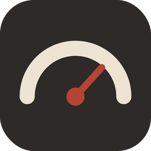

給影像工作者的 Mac 系統監看工具免費
監看都ok
看得到，不算完。
跟得上，才叫監看。
它做什麼
看一眼選單列，就知道。
吃重的時候，監看都ok 會自己處理。
- 看一眼CPU、GPU、溫度、硬碟即時更新，超標的數字會變紅
- 點開面板風扇、記憶體、網路、電池，一次看完
- 自動全開風扇Pr、達芬奇高負載時風扇全開，結束後自動恢復
即時的硬碟數字
寫入、刪除的當下，剩餘空間就跟著變，不用等系統慢慢更新。
溫度與過熱提醒
CPU、GPU、SSD 溫度與一小時曲線；持續過熱時，從選單列跳出通知。
外接碟一插就出現
每顆碟的即時讀寫速度與讀寫錯誤次數；要拔之前，退出也在這裡。
插卡就開備份都ok
只認相機記憶卡（DCIM／M4ROOT），外接硬碟不會觸發；順便告訴你卡還剩多少。
精簡模式
平常只留一個小圖示，有項目超標才顯示數字；面板要放什麼、怎麼排，也能自己調。
自動更新
有新版本時在 App 內提示，一鍵更新，設定都會保留。
更新紀錄
第一個版本即將發布，之後每次更新都會列在這裡。
開始使用
- 按「下載」，打開映像檔，把「監看都ok」拖進「應用程式」資料夾。
- 第一次打開時系統會確認一次，按「打開」即可。
- 選單列會出現數字，點一下就能打開面板。
- 第一次切換風扇時，會請你輸入一次 Mac 密碼（安裝風扇控制元件）。